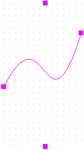
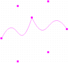
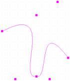

Bezier curves are defined using a start point, two control points and an end point. The two control points define the gradient of the curve. These two points control the shape of the curve. The entire curve is a blend of the four points that make up the curve.

To draw a Bezier curve
-
From the Place menu, choose the
Beziercommand - Click on the canvas to mark the start point of the curve.
- Click to mark the first control point.
- Click again to mark the second control point.
- Click to mark the end point of the curve.;
-
Select the selection tool or press
Escto dismiss the Bezier curve tool.

Extending the four-point curve
After you have drawn the four points of the Bezier curve, you can mark a fifth point on the canvas. You will notice that the shape from the forth to fifth points is a straight line. Here the end point of the first curve is the start point of a second four-point curve. You can then continue to make any number of four-point Bezier curves, each starting and the end of the previous curve.
You will also notice that the point connecting two contiguous four-points curve forms a sharp edge. If required, select and move this point to smoothen out this edge. You can thus create a curve with any number of control points.

To edit a Bezier curve
- Select and move the start or end points of the curve to alter the start or end positions of the curve.
- Select and move the two control points of the curve to alter its gradient.
Shortcut
Tool palette: